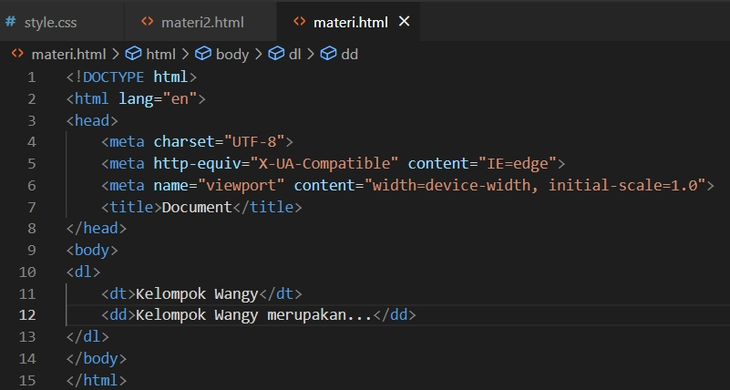
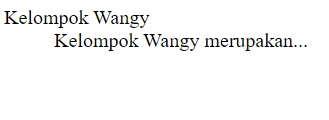
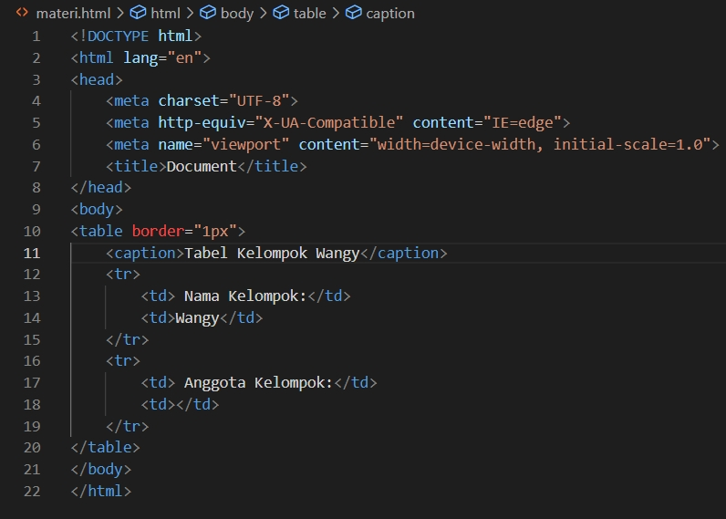
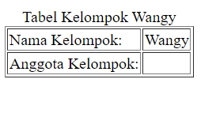
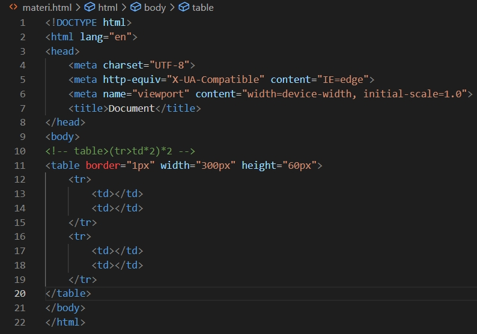
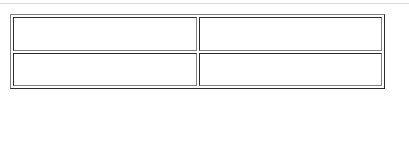
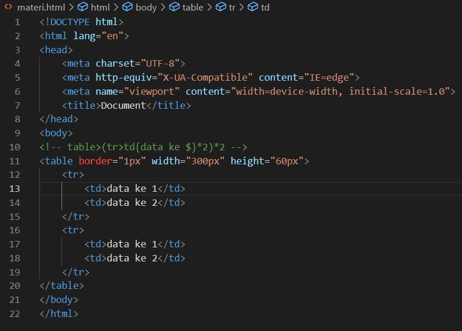
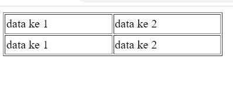

Dalam HTML, terdapat 2 jenis list. Jenis list tersebut adalah
Unorder list merupakan list yang tidak memiliki urutan/tidak terpaku dengan susunan.
Untuk unorder list, kita dapat menggunakan tag ul (<ul>) lalu untuk membuat list (<li>, kita dapat menggunakan tag list. Pada unorder list,
kita dapat menggunakan atribut type dengan value disc, square, circle karena mereka tidak terpaku dengan urutan.
Berikut merupakan contoh dari penggunaan unorder list
Untuk membuat unorder list secara cepat, kita dapat menggunakan rumus “ul>li*(jumlah list yang diperlukan)” sehingga saat
dienter, list akan berjumlah sesuai dengan angka yang dikali dengan list.
Untuk contoh penggunaan rumus cepat dapat dilihat pada gambar dibawah
Untuk menampilkan data didalam list secara cepat, Kita dapat menggunakan rumus “ul>li{data $}*(banyak data yang kita butuhkan)”
sehingga saat dienter, jumlah data yang keluar akan sesuai dengan angka yang dikali pada list tersebut.
Untuk contoh penggunaan rumus cepat dapat dilihat pada gambar dibawah
Order list merupakan list yang memiliki urutan/terpaku dengan susunan.
Untuk orderlist, kita dapat menggunakan tag ol dan untuk membuat list, kita dapat menggunakan tag list.
Pada order list, kita dapat menggunakan atribut type dengan value 1, i, I, a, dan A karena mereka terpaku dengan urutan/susunan.
Berikut merupakan beberapa contoh dari order list
Untuk pembuatan order list, kita dapat menggunakan cara cepat seperti pada unorder list yaitu “ol>li*(jumlah list
yang diperlukan)”.
Untuk order list, kita dapat menggunakan atribut start. Kita dapat menggunakan atribut start sebagai awalan dari order list.
Awalan pada order list dapat berupa angka, huruf romawi, hingga alfabet. Jika kita menggunakan atribut start dengan value
misalnya 5 maka order list akan mulai dari angka 5 bukan angka 1.
Untuk contoh dari penggunaan atribut start dapat dilihat pada gambar dibawah.
Description list merupakan list yang digunakan saat kita akan mendeskripsikan suatu hal
Untuk description list, kita dapat menggunakan tag dl (<dl>) lalu kita gunakan tag dt (<dt>) untuk menuliskan kata apa yang akan di definisi, kita dapat mengetikan tag dd (<dd>) untuk menuliskan deskripsi dari kata tersebut. Untuk contoh penggunaan tag dl dapat dilihat pada contoh dibawah
 Untuk memperindah dt, kita dapat menggunakan text formatting agar tulisan menjadi lebih nyaman untuk dibaca.
Tag table merupakan tag yang digunakan saat kita ingin membuat table pada file HTML kita.
Untuk penggunaan tag table, kita dapat menuliskan tag table lalu dalam tag table, kita dapat menuliskan tag tr(<tr>). Tag tr
merupakan tag yang berfungsi sebagai baris pada sebuah tabel.
Setelah tag tr, kita ketikan tag td (<td>). Tag td merupakan tag yang
berfungsi sebagai kolom pada sebuah tabel.Untuk membuat batas dari kolom terlihat, kita dapat menggunakan atribut border
sehingga table dapat dilihat oleh kita.
Untuk penulisan tag table dapat kita lihat pada gambar dibawah.
Selain itu juga, kita dapat memperikan judul pada table dengan menggunakan tag caption dibawah tag tabel.
 Untuk membuat tabel dengan baris sebanyak yang kita mau, kita dapat menggunakan rumus “tabel> (tr>td*(jumlah kolom yang diperlukan))*(jumlah baris yang diinginkan)” sehingga saat dienter, tabel akan otomatis terbuat dengan jumlah baris dan kolom sesuai keinginan kita. Untuk contoh penggunaan rumus cepat dapat dilihat pada gambar dibawah
 Untuk menampilkan data didalam tabel secara otomatis, Kita dapat menggunakan rumus “tabel>(tr>td {data ke $}*(jumlah kolom yang diperlukan))*(jumlah baris yang diinginkan)”“ sehingga saat dienter, jumlah data yang keluar akan sesuai dengan jumlah baris dan kolom yang telah dimasukan. Untuk contoh penggunaan rumus cepat dapat dilihat pada gambar dibawah
 Untuk membuat tabel /cell pada tabel menjadi lebih menarik kita dapat menggunakan atribut dan value yang memperindah
tabel/cell pada tabel kita.
Atribut dan value yang dapat kita gunakan adalah
RColspan merupakan sebuah atribut yang digunakan untuk memperbesar kolom pada sebuah cell.
Jika kita memasukan colspan pada sebuah kolom maka cell tersebut akan memperbesar sebuah cell sesuai dengan value dari atribut tersebut.
Sebagai contoh, jika kita memasukan atribut colspan sebesar 3 maka cell tersebut akan memperbesar kolom sebuah cell sebanyak 3.
Untuk contoh penggunaan colspan, kita dapat melihat gambar dibawah
Untuk membuat tabel sesuai dengan ukuran yang telah ditentukan, kita dapat membuat cell yang tercolspan sebagai comment sehingga cell tersebut tidak muncul di halaman website kita dan ukuran tabel sesuai dengan ukuran awal.
Rowspan merupakan sebuah atribut yang digunakan untuk memperbesar baris pada sebuah cell.
Jika kita memasukan rowspan pada sebuah kolom maka cell tersebut akan memperbesar sesuai dengan value dari atribut tersebut.
Sebagai contoh, jika kita memasukan atribut rowspan sebesar 3 maka cell tersebut akan memperbesar baris sebuah cell sebanyak 3.
Untuk membuat tabel sesuai dengan ukuran yang telah ditentukan, kita dapat membuat cell yang terrowspan sebagai comment sehingga cell tersebut tidak muncul di halaman website kita dan ukuran tabel sesuai dengan ukuran awal.
| Materi HTML dasar lain dapat dipelajari | |||
| Materi 1 | Materi 2 | Materi 3 | Materi 4 |